Hyperparameter Evaluation
Sebastian Hönel
2020-03-16
Hyperparameter-Evaluation.rmdThis vignette only embeds a rendered version of another
Rnotebook, that evaluates the effect of hyperparameters of all functions used for inferencing in the packagemmb. It should be displayed right below this paragraph. If you have trouble viewing it, check out the latest version on Github: Hyperparameter Evaluation. Additional formats are available here: Additional Formats.
Functions implemented in mmb support some hyperparameters. This notebook evaluates them and compares performance to other well-known methods, using some well-known methods. The results of this notebook are included in the vignette Hyperparameter Evaluation. Since this is a rather substantial analysis, it cannot be a vignette itself, and is built externally.
Grid search
In the first section, we are evaluating our new classifier and regressor for some well known datasets, using a grid-search approach and caret. We start with classification, then continue with regression. Those best parameters will then be used in further comparisons against other models.
In the following block, we can globally disable attempts to compute results. If the resulting files are present, then the related evaluations are skipped anyway. However, setting the following to FALSE, will prevent the actual attempt.
DISABLE_COMPUTATIONS <- TRUE
# Used with many qualititave values as brewer color palette:
QPALETTE <- "Set3"
# This is in inches!
tikzWidthFull <- 6.1 # 6.12619 original/maximal for JSS articleLet’s first install all the needed packages:
First, define the models we want to test:
# Used by both regression and classification!
caret_models <- c(
"null", "bayesCaret", "ranger", "gbm", "mlpML", "bayesglm")
# This is extra models used for classification/regression resp.:
caret_models_c <- c(caret_models,
"pam", "naive_bayes", "C5.0", "rda")
caret_models_r <- c(caret_models,
"knn", "pcr", "kernelpls", "rpart2")We define a couple of helper-functions:
# We will truncate all datasets to this amount if larger using
# appropriate resampling!
max_rows_dataset <- 2000
#' Unifies the way we retrieve a dataset. Already splits the dataset
#' into training- and validation partitions. The split is 0.7, if the
#' amount of rows is less than 800; 0.85, otherwise.
#' @param name a short-cut name of the dataset to obtain, e.g. "iris"
#' @param seedMult an integer used for \code{set.seed()}. The seedMult
#' influences how we sample into training and validation.
#' @param useDs an optional data.frame of a 3rd party dataset. Use this
#' to use your own dataset but still obtain a list as produced by this
#' function.
#' @param useLabel character the name of the label to use when passing
#' in an own dataset using 'useDs'.
#' @return list with the entries 'ds' (the entire dataset as data.frame),
#' 'label' (name of column to be the label/target), 'train' and 'valid'
#' (data.frames with training and validation data; train+valid = ds)
get_dataset <- function(name, seedMult, useDs = NULL, useLabel = NULL) {
set.seed((0xceed * seedMult * max_rows_dataset) %% .Machine$integer.max)
ds <- NULL
dsLabel <- "Class"
if (name == "chick") {
data("ChickWeight")
ds <- data.frame(ChickWeight)
dsLabel <- "Diet"
} else if (name == "iris") {
data("iris")
ds <- iris
dsLabel <- "Species"
} else if (name == "credit") {
data("GermanCredit")
ds <- data.frame(GermanCredit)[, 1:10]
} else if (name == "glass") {
data("Glass")
ds <- data.frame(Glass)
dsLabel <- "Type"
} else if (name == "breast") {
data("BreastCancer")
ds <- data.frame(BreastCancer)
ds$Id <- NULL
ds$Cl.thickness <- as.integer(ds$Cl.thickness)
ds$Cell.size <- as.integer(ds$Cell.size)
ds$Cell.shape <- as.integer(ds$Cell.shape)
ds$Marg.adhesion <- as.integer(ds$Marg.adhesion)
ds$Epith.c.size <- as.integer(ds$Epith.c.size)
ds$Bare.nuclei <- as.integer(ds$Bare.nuclei)
ds$Bl.cromatin <- as.integer(ds$Bl.cromatin)
ds$Normal.nucleoli <- as.integer(ds$Normal.nucleoli)
ds$Mitoses <- as.integer(ds$Mitoses)
} else if (name == "sonar") {
data("Sonar")
ds <- data.frame(Sonar)
} else if (name == "vowel") {
data("Vowel")
ds <- data.frame(Vowel)
ds$V1 <- as.integer(ds$V1)
} else if (name == "iono") {
data("Ionosphere")
ds <- data.frame(Ionosphere)
ds$V1 <- as.integer(ds$V1)
ds$V2 <- NULL
} else if (name == "vehicle") {
data("Vehicle")
ds <- data.frame(Vehicle)
} else if (name == "letter") {
data("LetterRecognition")
ds <- data.frame(LetterRecognition)
dsLabel <- "lettr"
} else if (name == "satellite") {
data("Satellite")
ds <- data.frame(Satellite)
dsLabel <- "classes"
} else if (name == "segment") {
data("segmentationData")
ds <- data.frame(segmentationData)
ds$Cell <- NULL
ds$Case <- as.integer(ds$Case)
}
# Below regression-datasets!
# 'label'/'dsLabel' is the target regression column!
else if (name == "diamonds") {
data("diamonds")
ds <- data.frame(diamonds)
dsLabel <- "price"
ds$cut <- as.integer(ds$cut)
ds$color <- as.integer(ds$color)
ds$clarity <- as.integer(ds$clarity)
} else if (name == "sacramento") {
data("Sacramento")
ds <- data.frame(Sacramento)
dsLabel <- "price"
ds$zip <- NULL
ds$city <- as.character(ds$city)
ds$type <- as.character(ds$type)
} else if (name == "boston") {
data("BostonHousing")
ds <- data.frame(BostonHousing)
dsLabel <- "ptratio"
ds$chas <- as.character(ds$chas)
} else if (name == "midwest") {
data("midwest")
ds <- data.frame(midwest)
dsLabel <- "percwhite"
ds$PID <- NULL
ds$county <- NULL
ds$category <- NULL
} else if (name == "seals") {
data("seals")
ds <- data.frame(seals)
dsLabel <- "delta_long"
} else if (name == "txhousing") {
data("txhousing")
ds <- data.frame(txhousing)
dsLabel <- "sales"
} else if (name == "mortality") {
data("USRegionalMortality")
ds <- data.frame(USRegionalMortality)
dsLabel <- "Rate"
ds$Region <- as.character(ds$Region)
ds$Status <- as.character(ds$Status)
ds$Sex <- as.character(ds$Sex)
ds$Cause <- as.character(ds$Cause)
} else if (name == "singer") {
data("singer")
ds <- data.frame(singer)
dsLabel <- "height"
ds$voice.part <- as.character(ds$voice.part)
} else if (name == "pima") {
data("PimaIndiansDiabetes")
ds <- data.frame(PimaIndiansDiabetes)
dsLabel <- "age"
ds$diabetes <- as.character(ds$diabetes)
} else if (name == "ozone") {
data("Ozone")
ds <- data.frame(Ozone)
dsLabel <- "V11"
ds$V9 <- NULL # too many NAs
ds$V1 <- as.integer(ds$V1)
ds$V2 <- as.integer(ds$V2)
ds$V3 <- as.integer(ds$V3)
} else if (name == "faithful") {
data("faithfuld")
ds <- data.frame(faithfuld)
dsLabel <- "density"
}
# Below non-datasets
else if (is.data.frame(useDs)) {
ds <- useDs
dsLabel <- useLabel
} else {
stop(paste("Dataset is not known:", name))
}
# Only take complete rows!
ds <- ds[complete.cases(ds), ]
if (nrow(ds) > max_rows_dataset) {
tempPart <- createDataPartition(
ds[[dsLabel]], p = max_rows_dataset / nrow(ds), list = F)
ds <- ds[tempPart, ]
}
part <- createDataPartition(
ds[[dsLabel]], p = ifelse(nrow(ds) < 800, 0.7, 0.85), list = F)
return(list(
ds = ds,
label = dsLabel,
train = ds[part, ],
valid = ds[-part, ]
))
}
#' Uses caret's 'bestTune', i.e., the best found hyperparameters from the
#' grid-search, and extracts the results from each fold/repeat that uses
#' these. The result is a table with the results obtained using the best
#' set of hyperparameters.
#' @param resample data.frame as obtained from a fitted model trained
#' with caret (model$resample). This should ideally be obtained using a
#' train-configuration where resample="all".
#' @param bestTune data.frame as obtained from a fitted model trained
#' with caret (model$bestTune).
#' @return data.frame a subset of 'resample', where the rows use the hyper-
#' parameters from 'bestTune'.
aggregate_caret_results <- function(resample, bestTune) {
conds <- c()
for (cName in colnames(bestTune)) {
bt <- bestTune[[cName]]
cond <- NULL
wasEmpty <- is.na(bt) || is.nan(bt)
if (wasEmpty) {
n <- if (is.nan(bt)) "n" else ""
cond <- paste(
"is.na", n, "(resample$", cName, ")", sep = "")
} else if (is.numeric(bt) && (bt[1] %% 1 != 0)) {
cond <- paste(
"(abs(resample$", cName, " - ", "bestTune$", cName, ") < 1e-15)", sep = "")
} else if (is.character(bt) || is.factor(bt)) {
cond <- paste(
"resample$", cName, " == ",
paste('"', bestTune[[cName]], '"', sep = ""),
sep = ""
)
} else {
cond <- paste(
"resample$", cName, " == ", "bestTune$", cName, sep = "")
}
conds <- c(conds, cond)
if (!wasEmpty) {
conds <- c(conds, paste("!is.na(resample$", cName, ")", sep = ""))
}
}
return(resample[eval(parse(text = paste(conds, collapse = " & "))), ])
}
#' Returns a list of seeds used in parallel training with caret. For
#' repeatability, we need deterministic seeds. The amount depends on
#' the amounts of hyperparamenters, and number of folds/repeats.
#' @param nh integer, the number of hyperparameters
#' @param amount integer, the number of seeds, usually this is number
#' of folds * number of repeats.
#' @param seed integer used in \code{set.seed()}. Given an identical
#' seed, this function produces the same seeds (idempotent).
#' @return list with seeds that can be used in caret's trainControl
get_seeds <- function(nh, amount, seed = 42) {
set.seed(seed)
seeds <- vector(mode = "list", length = amount + 1)
for(i in 1:amount) seeds[[i]] <- sample.int(.Machine$integer.max, nh)
# For the last model:
seeds[[amount + 1]] <- sample.int(.Machine$integer.max, 1)
return(seeds)
}Let’s define a function to perform grid search.
#' modelsAndDatasets is a data.frame with columns 'model' and 'dataset'.
#' It should already match each model with the right dataset, i.e., it
#' should not have a row {nb,diamonds}, as Naive Bayes cannot regress.
#' This function does not return anything, but stores the result of each
#' model/dataset combination as CSV.
#' @param modelsAndDatasets data.frame, with the columns 'model' and
#' 'dataset'. Model needs to be acceptable for caret, and dataset needs
#' to be acceptable by @seealso \code{get_dataset()}.
#' @return void
get_other_models_results <- function(modelsAndDatasets = data.frame()) {
if (DISABLE_COMPUTATIONS) {
return(0)
}
perms <- modelsAndDatasets[order(modelsAndDatasets$model, modelsAndDatasets$dataset), ]
set.seed(0xbeef42)
perms <- perms[sample(rownames(perms)), ]
numCores <- parallel::detectCores()
numCoresNested <- if (nrow(perms) < numCores) numCores else max(2, numCores / 4)
cl <- parallel::makeCluster(max(2, numCores / 2), outfile = "")
clusterExport(cl, as.list(names(.GlobalEnv)))
registerDoSNOW(cl)
pb <- txtProgressBar(min = 0, max = nrow(perms), style = 3)
caretModelResultsList <- foreach(
permRowIdx = rownames(perms),
.packages = c(packages_required),
.options.snow = list(
progress = function(n) {
writeLines(paste(n, Sys.time(), sep = " -- "), con = "progress.txt")
setTxtProgressBar(pb, n)
}
)
) %dopar% {
idx <- as.numeric(permRowIdx)
permRow <- perms[permRowIdx, ]
dsList <- get_dataset(permRow$dataset, seedMult = 1337 * idx)
trP <- nrow(dsList$train) / nrow(dsList$ds)
isRegress <- is.numeric(dsList$ds[, dsList$label])
typeShort <- if (isRegress) "r" else "c"
isMMB <- length(grep("bayesCaret", permRow$model)) > 0
dataName <- paste("results_", typeShort, "/", permRow$model, "_", permRow$dataset, "_", typeShort, ".csv", sep = "")
if (file.exists(dataName)) {
return(read.csv(dataName))
}
# Workaround: The models mlpML, pam, rda do not support ordered factors
# in the chick dataset and will fail, but we can convert them to numeric.
if (permRow$model %in% c("mlpML", "pam", "rda") && permRow$dataset == "chick") {
dsList$ds$Chick <- as.numeric(dsList$ds$Chick)
dsList$train$Chick <- as.numeric(dsList$train$Chick)
dsList$valid$Chick <- as.numeric(dsList$valid$Chick)
}
x <- dsList$ds[, !(colnames(dsList$ds) %in% c(dsList$label))]
y <- dsList$ds[, dsList$label]
rcvNumber <- 5
rcvRepeats <- 3
trMethod <- "repeatedcv"
tuneLength <- ifelse(trMethod == "none", 1, 3)
numHypers <- nrow(if (isMMB) mmb::bayesCaret$grid(x = x, y = y) else caret::getModelInfo(
permRow$model)[[1]]$grid(len = tuneLength, x = x, y = y))
set.seed(idx * 23)
trControl <- caret::trainControl(
method = trMethod, number = rcvNumber, repeats = rcvRepeats,
p = trP, savePredictions = "all", returnResamp = "all",
seeds = get_seeds(numHypers, rcvNumber * rcvRepeats, seed = idx * 23))
clNested <- makePSOCKcluster(numCoresNested)
registerDoParallel(clNested)
set.seed(idx * 371)
timeStart <- proc.time()[["elapsed"]]
modelName <- as.character(permRow$model)
modelObj <- if (isMMB) mmb::bayesCaret else modelName
model <- caret::train(x = x, y = y, method = modelObj, trControl = trControl)
timeEnd <- proc.time()[["elapsed"]]
stopCluster(clNested)
# Now we store 2 things:
# - The full resample
# - The aggregated resample (those matching bestTune)
dataFull <- model$resample
dataFull$Model <- permRow$model
dataFull$Dataset <- permRow$dataset
dataFull$Runtime <- (timeEnd - timeStart) / (rcvNumber * rcvRepeats)
# Now the aggregated:
dataAgg <- aggregate_caret_results(dataFull, model$bestTune)
# Rename some columns and write files:
for (cn in colnames(model$bestTune)) {
dataFull[[paste("hyper.", cn, sep = "")]] <- dataFull[[cn]]
if (!(cn %in% c("Model", "Dataset", "Runtime"))) {
dataFull[[cn]] <- NULL # delete renamed column
}
dataAgg[[paste("hyper.", cn, sep = "")]] <- dataAgg[[cn]]
if (!(cn %in% c("Model", "Dataset", "Runtime"))) {
dataAgg[[cn]] <- NULL
}
}
dataName <- paste("results_", typeShort, "/", permRow$model, "_", permRow$dataset, "_", typeShort, ".csv", sep = "")
utils::write.csv(dataFull, dataName)
dataName <- paste("results_", typeShort, "/", permRow$model, "_", permRow$dataset, "_", typeShort, "_agg.csv", sep = "")
utils::write.csv(dataAgg, dataName)
return(dataFull)
}
stopCluster(cl)
registerDoSEQ()
}Classification
Here, we use the full grid as provided by bayesCaret. Please note that the grid and its size depend on whether we are doing classification or not.
datasets_c <- c("iris", "chick", "credit", "glass", "breast", "sonar", "iono", "vehicle")
modelAndData_c <- expand.grid(
model = caret_models_c,
dataset = datasets_c,
stringsAsFactors = FALSE)
get_other_models_results(modelAndData_c)
## [1] 0Regression
# We set a new default regressor, to avoid NaN in sparse predictions.
mmb::setDefaultRegressor(function(data) {
res <- mmb::estimatePdf(data)$argmax
if (is.na(res)) {
res <- median(data)
}
return(res)
})
datasets_r <- c("mortality", "sacramento", "boston", "seals", "faithful", "diamonds", "pima", "txhousing")
modelAndData_r <- expand.grid(
model = caret_models_r,
dataset = datasets_r,
stringsAsFactors = FALSE)
get_other_models_results(modelAndData_r)
## [1] 0Let’s print some table/overview of datasets that we actually use.
datasets_overview <- do.call(rbind, lapply(c(datasets_c, datasets_r), function(d) {
dsList <- get_dataset(d, seedMult = 1)
isReg <- is.numeric(dsList$valid[[dsList$label]])
return(data.frame(
Name = d,
NumTrain = nrow(dsList$train),
NumValid = nrow(dsList$valid),
Predictors = length(colnames(dsList$train)),
Classes = if (isReg) "Regression" else length(unique(as.character(dsList$ds[[dsList$label]])))
))
}))
print(datasets_overview)
## Name NumTrain NumValid Predictors Classes
## 1 iris 105 45 5 3
## 2 chick 405 173 4 4
## 3 credit 850 150 10 2
## 4 glass 153 61 10 6
## 5 breast 479 204 10 2
## 6 sonar 146 62 61 2
## 7 iono 247 104 34 2
## 8 vehicle 722 124 19 4
## 9 mortality 281 119 6 Regression
## 10 sacramento 795 137 8 Regression
## 11 boston 356 150 14 Regression
## 12 seals 983 172 4 Regression
## 13 faithful 1701 300 3 Regression
## 14 diamonds 1703 299 10 Regression
## 15 pima 539 229 9 Regression
## 16 txhousing 1704 298 9 RegressionEvaluation
In this section, we will load the results and aggregate all data, so that we can then continue with visualizations and statistical analyses. We begin by first loading the results for all other models, before continuing with our Bayesian results.
install.packages_cond("extrafont")
## Registering fonts with R
if (.Platform$OS.type == "windows") {
windowsFonts(Times = windowsFont("Times"))
windowsFonts(Consolas = windowsFont("Consolas"))
}
# Was overridden by RandomForest
margin <- ggplot2::margin
#' Given a ggplot2 instance, saves the plot as EPS in the figures-directory,
#' and then returns it for further processing.
#' @param ggplotInstance a gg plot
#' @param fileName character the name of the file, without the extension.
#' @param width in inches, defaults to @seealso \code{tikzWidthFull}
#' @param height in inches, defaults to 6cm (~2.36in)
#' @return ggplot the instance as given, unchanged
saveAndPlotAsEPS <- function(ggplotInstance, fileName, width = tikzWidthFull, height = 600/254) {
f <- "figures"
if (!dir.exists(f)) {
dir.create(f)
}
fileName <- paste(f, paste(fileName, ".eps", sep = ""), sep = "/")
ggsave(fileName, ggplotInstance,
width = floor(width * 100) / 100,
height = floor(height * 100) / 100,
limitsize = F, device = cairo_pdf)
return(ggplotInstance)
}Evaluation of the Bayesian models, compared to other models
In this section, we will compare the performance of our Bayesian models to other, well-known models, such as Random forest.
Load and aggregate the data (classification)
We need to aggregate the results from each model, both for classification and regression. While caret determined a best fit per model (these are the results in the *_agg.csv-files), we will manually determine those for BayesCaret, as the result between full/simple/naive are quite different.
We use the following naming-schema for our results:
-
gridresults_{type}_{model(s)}, wheretypeis either ‘r’ or ‘c’, andmodelis either ‘bc_{f/s/n}’ (BayesCaret full/simple/naive \[only used in the ‘Model’ column, the name of the variable will only be ‘bc’\]) or ‘other’ (all other models) -
bestHps_{type}_{model(s)}, takes the best performing hyperparameters for each model/dataset combination and filters the grid-results. Similar to taking caret’sbestTuneand returning those rows that match the hyperparameters of it.
We keep the gridresults for BayesCaret and all other models separate, as we keep the full hyperparameters for our models for later evaluation. For other models, we only report their performance regardless of the hyperparameters used by caret in the grid-search.
#' Reads all BayesCaret-datasets, merges complete cases and returns them.
#' @param d the name of the dataset, e.g. "iris"
#' @param type either "c" or "r"
#' @return data.frame of all merged CSV files (only complete cases).
aggregateBCdatasets <- function(d, type) {
cc <- if (type == "c") c("Accuracy", "Kappa") else c("RMSE", "Rsquared")
csv <- read.csv(paste("results_", type, "/bayesCaret_", d, "_", type, ".csv", sep = ""))
csv <- csv[complete.cases(csv[, cc]), ]
# Remove X column
csv$X <- NULL
# When Naive Bayes was added, simple=T/F was replaced by mode=simple/full/naive.
# When reading in old results that do not have naive, we engineer this column
# and delete the 'simple'-column.
if (!("hyper.mode" %in% colnames(csv))) {
csv$hyper.mode <- sapply(csv$hyper.simple, function(x) if (x) "simple" else "full")
csv$hyper.simple <- NULL
}
# Set Model to 'bc_{f/s/n}'
csv$Model <- sapply(csv$hyper.mode, function(m) paste("bc",
if (m == "simple") "s" else if (m == "full") "f" else "n", sep = "_"))
return(csv)
}
#' Finds the best tune per model (full/simple/naive) and model, and extracts
#' the results from all resamples matching the hyperparameters from the best tune.
#' @param gridresults data.frame with all results from the grid-search
#' @param type either "c" or "r"
#' @return data.frame with subset of best results
findBestBCtune <- function(gridresults, type) {
metric <- if (type == "c") "Accuracy" else "RMSE"
metrics <- if (type == "c") c("Accuracy", "Kappa") else c("RMSE", "Rsquared", "MAE")
# For each of these, we'll find a best-tune per dataset
bcModels <- c("bc_f", "bc_s", "bc_n")
datasets <- unique(as.character(gridresults$Dataset))
bestResults <- NULL
for (ds in datasets) {
for (m in bcModels) {
dsTemp <- gridresults[gridresults$Model == m & gridresults$Dataset == ds, ]
bestTuneFunc <- if (type == "c") which.max else which.min
bestTune <- dsTemp[bestTuneFunc(dsTemp[[metric]]), ]
best <- aggregate_caret_results(
dsTemp, bestTune = bestTune[1, grep("^hyper\\.", colnames(bestTune)), ])
if (nrow(best) == 0) next
# Add some more aggregates:
for (ms in metrics) {
best[[paste(ms, "min", sep = ".")]] <- min(best[[ms]])
best[[paste(ms, "max", sep = ".")]] <- max(best[[ms]])
best[[paste(ms, "mean", sep = ".")]] <- mean(best[[ms]])
best[[paste(ms, "median", sep = ".")]] <- median(best[[ms]])
}
bestResults <- rbind(bestResults, best)
}
}
return(bestResults)
}
gridresults_c_bc <- do.call(
rbind, lapply(datasets_c, function(d) aggregateBCdatasets(d, "c")))
gridresults_r_bc <- do.call(
rbind, lapply(datasets_r, function(d) aggregateBCdatasets(d, "r")))
bestHps_c_bc <- findBestBCtune(gridresults_c_bc, "c")
bestHps_r_bc <- findBestBCtune(gridresults_r_bc, "r")Let’s aggregate all the other datasets into one common data.frame while we’re at it:
#' Merges and aggregates all other datasets, similar to the function
#' that does the same thing for BayesCaret.
#' @param d character name of dataset, e.g. "iris"
#' @param m character name of model, e.g. "ranger"
#' @param type "r" or "c"
#' @param agg BOOLEAN if true, aggregates the already aggregated
#' results (from best-tune as done by caret during the evaluation;
#' these results are stored in CSVs with same name, ending in "_agg").
aggregateOtherdatasets <- function(d, m, type, agg = FALSE) {
aggSuff <- if (agg) "_agg" else ""
f <- paste("results_", type, "/", m, "_", d, "_", type, aggSuff, ".csv", sep = "")
if (!file.exists(f)) return(data.frame()) # Some may be still computing..
# Let's read the results for every model, but only keep the metrics's columns.
keepCols <- c("Dataset", "Model", "Accuracy", "Kappa", "RMSE", "Rsquared", "MAE", "Resample", "Runtime")
cc <- if (type == "c") c("Accuracy", "Kappa") else c("RMSE") # "Rsquared" is NA for "null" (ZeroR)
csv <- read.csv(f)
csv <- csv[complete.cases(csv[, cc]), ]
if (m == "null" && type == "r") {
csv$Rsquared <- 0
}
# Remove X column
csv$X <- NULL
return(csv[, colnames(csv) %in% keepCols])
}
gridresults_c_others <- do.call(
rbind, lapply(datasets_c, function(d) do.call(rbind, lapply(caret_models_c, function(m) {
if (m == "bayesCaret") return(data.frame()) # Effectively skip this
return(aggregateOtherdatasets(d, m, "c"))
}))))
gridresults_r_others <- do.call(
rbind, lapply(datasets_r, function(d) do.call(rbind, lapply(caret_models_r, function(m) {
if (m == "bayesCaret") return(data.frame())
return(aggregateOtherdatasets(d, m, "r"))
}))))
bestHps_c_others <- do.call(
rbind, lapply(datasets_c, function(d) do.call(rbind, lapply(caret_models_c, function(m) {
if (m == "bayesCaret") return(data.frame()) # Effectively skip this
return(aggregateOtherdatasets(d, m, "c", agg = TRUE))
}))))
bestHps_r_others <- do.call(
rbind, lapply(datasets_r, function(d) do.call(rbind, lapply(caret_models_r, function(m) {
if (m == "bayesCaret") return(data.frame())
return(aggregateOtherdatasets(d, m, "r", agg = TRUE))
}))))Plot results for Accuracy and Kappa
We show some plots that our classifier was run on, showing Accuracy and Kappa for full- and simple-models.
(ggplot(gridresults_c_bc, aes(x=Dataset, y=Accuracy, color=Dataset, fill=Dataset)) +
labs(subtitle = "Accuracy of full, naive and simple classification.") +
geom_boxplot(color="black") +
facet_wrap(hyper.mode ~ ., labeller = label_both) +
theme_light(base_size = 9) +
scale_color_brewer(palette = QPALETTE) +
scale_fill_brewer(palette = QPALETTE) +
ylim(0, 1) +
theme(
text = element_text(family="Consolas"),
axis.text.x = element_text(angle = 45, margin = margin(t=10), hjust = .66),
axis.title.x = element_blank(), strip.background = element_rect(fill="#dfdfdf"),
axis.title.y = element_text(margin = margin(r=10)),
legend.text = element_text(size = 8),
strip.text = element_text(color="black"))
) %>% saveAndPlotAsEPS("Bayes-all-datasets_Acc")
# Now let's do the same, for Kappa
(ggplot(gridresults_c_bc, aes(x=Dataset, y=Kappa, color=Dataset, fill=Dataset)) +
labs(subtitle = "Kappa of full, naive and simple classification.") +
geom_boxplot(color="black") +
facet_wrap(hyper.mode ~ ., labeller = label_both) +
theme_light(base_size = 9) +
scale_color_brewer(palette = QPALETTE) +
scale_fill_brewer(palette = QPALETTE) +
ylim(-.1, 1) + # Some results have a negative Kappa..
theme(
text = element_text(family="Consolas"),
axis.text.x = element_text(angle = 45, margin = margin(t=10), hjust = .66),
axis.title.x = element_blank(), strip.background = element_rect(fill="#dfdfdf"),
axis.title.y = element_text(margin = margin(r=10)),
legend.text = element_text(size = 8),
strip.text = element_text(color="black"))
) %>% saveAndPlotAsEPS("Bayes-all-datasets_Kappa")
## Warning: Removed 307 rows containing non-finite values (stat_boxplot).
## Warning: Removed 307 rows containing non-finite values (stat_boxplot).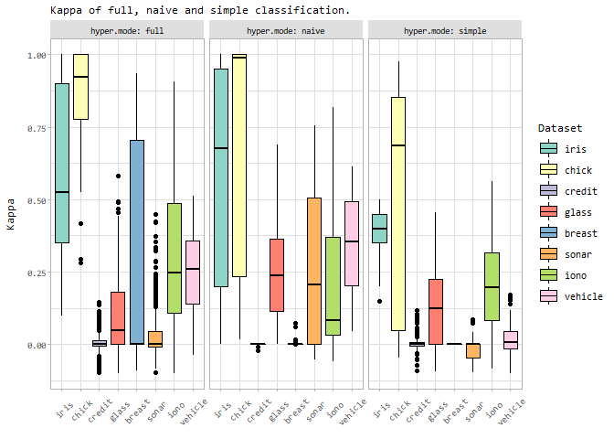
Plot Accuracy and Kappa as compared to other Classifiers
Let’s do almost the same, but this time compare to all other trained models as well.
tempDsCols_c <- c("Dataset", "Model", "Accuracy", "Kappa", "Resample", "Runtime")
gridresults_c_all <- rbind(
gridresults_c_bc[, tempDsCols_c],
gridresults_c_others[, tempDsCols_c])
# Rename some models:
gridresults_c_all$Model <- sapply(
as.character(gridresults_c_all$Model), function(m) if (m == "bc_f") "mmb:Full" else m)
gridresults_c_all$Model <- sapply(
as.character(gridresults_c_all$Model), function(m) if (m == "bc_n") "mmb:Naive" else m)
gridresults_c_all$Model <- sapply(
as.character(gridresults_c_all$Model), function(m) if (m == "bc_s") "mmb:Simple" else m)
gridresults_c_all$Model <- sapply(
as.character(gridresults_c_all$Model), function(m) if (m == "null") "ZeroR" else m)
# Next, we want to order the models:
modelsFirst_c <- c("ZeroR", "mmb:Simple", "mmb:Full", "mmb:Naive")
modelsFirst_c <- c(
modelsFirst_c, sort(setdiff(unique(as.character(gridresults_c_all$Model)), modelsFirst_c)))
gridresults_c_all$Model <- factor(
as.character(gridresults_c_all$Model), levels = modelsFirst_c, ordered = TRUE)
facettedBoxplot <- function(dataset, metric, metricName = metric, scales = "fixed", scale_y = scale_y_continuous()) {
ggplot(dataset, aes(y = dataset[[metric]], x = Model, fill = Model)) +
labs(subtitle = paste("Comparison of", metricName, "against the baseline (ZeroR) and other models.")) +
geom_boxplot(lwd = .2,
outlier.colour = "#666666",
outlier.size = 2,
outlier.shape = 16,
outlier.alpha = .75,
outlier.stroke = 0) +
coord_flip() +
facet_wrap(Dataset ~., nrow = 2, scales = scales) +
scale_y +
scale_color_brewer(palette = QPALETTE) +
scale_fill_brewer(palette = QPALETTE) +
labs(fill = "Method") +
theme_light(base_size = 9) +
theme(plot.subtitle = element_text(size = 7, margin = margin(b=5)),
text = element_text(family="Consolas"),
axis.text.y = element_text(margin = margin(r=5)),
axis.title.y.left = element_blank(),
axis.text.x = element_text(angle = 90, margin = margin(t=5), hjust = 1, vjust = .4),
axis.title.x = element_blank(),
legend.margin = margin(l=5),
legend.text = element_text(size = 7),
legend.key.height = unit(14, "pt"),
strip.background = element_rect(fill="#dfdfdf"),
strip.text = element_text(color="black", size = 8))
}Let’s make some combined Box-plots:
facettedBoxplot(gridresults_c_all, "Accuracy") %>% saveAndPlotAsEPS("Bayes-all-datasets_bp_Accuracy", height = 3.2)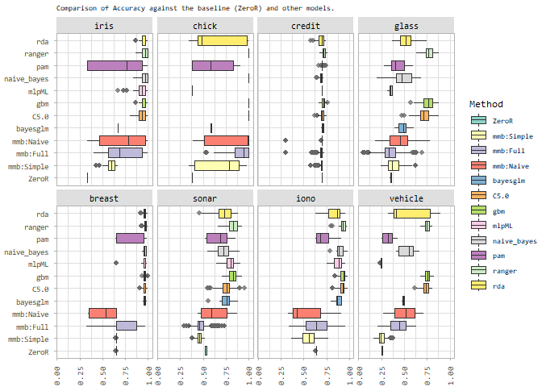
facettedBoxplot(gridresults_c_all, "Kappa") %>% saveAndPlotAsEPS("Bayes-all-datasets_bp_Kappa", height = 3.2)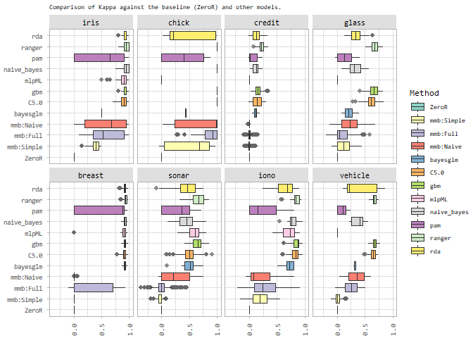
Load the data for regression
Almost the same as for classification, only that of the time of writing, not all results were present, so we add a check. Also, we already read all other results, as we will be needing ZeroR-results already.
Now, for each dataset, we want to show the performance metrics (MAE, RMSE, R^2) of BayesCaret (full and simple modes) vs. ZeroR. For that, we need to create a common dataset first:
tempDsCols_r <- c("Dataset", "Model", "RMSE", "Rsquared", "MAE", "Resample", "Runtime")
gridresults_r_all <- rbind(
gridresults_r_bc[, tempDsCols_r],
gridresults_r_others[, tempDsCols_r])
# Rename some models:
gridresults_r_all$Model <- sapply(
as.character(gridresults_r_all$Model), function(m) if (m == "bc_f") "mmb:Full" else m)
gridresults_r_all$Model <- sapply(
as.character(gridresults_r_all$Model), function(m) if (m == "bc_s") "mmb:Simple" else m)
gridresults_r_all$Model <- sapply(
as.character(gridresults_r_all$Model), function(m) if (m == "null") "ZeroR" else m)
# Next, we want to order the models:
modelsFirst_r <- c("ZeroR", "mmb:Simple", "mmb:Full")
modelsFirst_r <- c(
modelsFirst_r, sort(setdiff(unique(as.character(gridresults_r_all$Model)), modelsFirst_r)))
gridresults_r_all$Model <- factor(
as.character(gridresults_r_all$Model), levels = modelsFirst_r, ordered = TRUE)
tempDs <- do.call(rbind, lapply(datasets_r, function(d) {
return(do.call(rbind, lapply(c(caret_models_r, "Full", "Simple", "Naive"), function(m) {
data <- gridresults_r_all[gridresults_r_all$Model == m & gridresults_r_all$Dataset == d, ]
if (nrow(data) == 0) return(data.frame())
return(data.frame(
Model = m,
Dataset = d,
RMSE.mean = mean(data$RMSE),
Rsquared.mean = mean(data$Rsquared),
MAE.mean = mean(data$MAE)
))
})))
}))
# So it prints at least a small blue bar indicating it is actually zero..
tempDs$Rsquared.mean <- tempDs$Rsquared.mean + 1e-2
(ggplot(tempDs, aes(y = RMSE.mean, x = Model, fill = Model)) +
labs(subtitle = "Comparison of RMSE.mean against the baseline (ZeroR) and other models.") +
geom_bar(position = "dodge", stat = "identity") +
coord_flip() +
facet_wrap(Dataset ~., scales = "free", nrow = 2) +
scale_color_brewer(palette = QPALETTE) +
scale_fill_brewer(palette = QPALETTE) +
theme_light(base_size = 9) +
theme(text = element_text(family="Consolas"),
axis.text.x = element_text(angle = 45, margin = margin(t=10), hjust = .66),
axis.title.x = element_blank(), strip.background = element_rect(fill="#dfdfdf"),
axis.title.y = element_text(margin = margin(r=10)),
legend.text = element_text(size = 8),
strip.text = element_text(color="black")) + labs(fill = "Method")
) %>% saveAndPlotAsEPS("Bayes-all-datasets_RMSE", height = 12/2.54)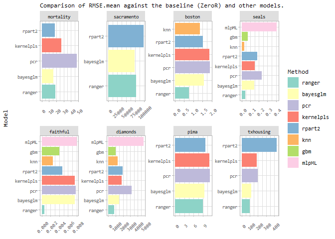
(ggplot(tempDs, aes(y = MAE.mean, x = Model, fill = Model)) +
labs(subtitle = "Comparison of MAE.mean against the baseline (ZeroR) and other models.") +
geom_bar(position = "dodge", stat = "identity") +
coord_flip() +
facet_wrap(Dataset ~., scales = "free", nrow = 2) +
scale_color_brewer(palette = QPALETTE) +
scale_fill_brewer(palette = QPALETTE) +
theme_light(base_size = 9) +
theme(text = element_text(family="Consolas"),
axis.text.x = element_text(angle = 45, margin = margin(t=10), hjust = .66),
axis.title.x = element_blank(), strip.background = element_rect(fill="#dfdfdf"),
axis.title.y = element_text(margin = margin(r=10)),
legend.text = element_text(size = 8),
strip.text = element_text(color="black")) + labs(fill = "Method")
) %>% saveAndPlotAsEPS("Bayes-all-datasets_MAE", height = 12/2.54)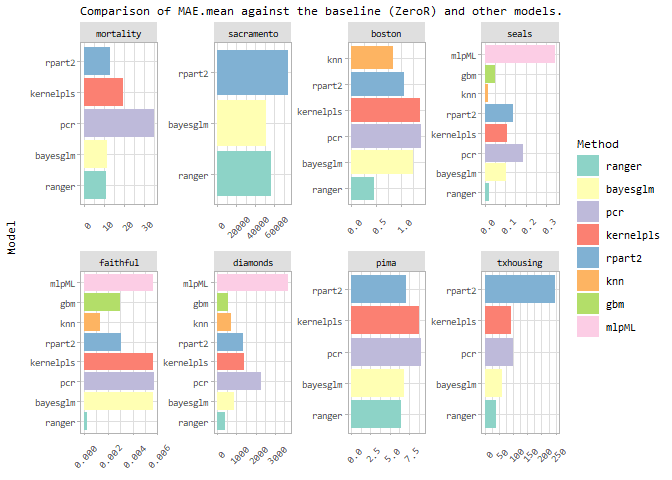
(ggplot(tempDs, aes(y = Rsquared.mean, x = Model, fill = Model)) +
labs(subtitle = "Comparison of (R^2).mean against the baseline (ZeroR) and other models.") +
ylab("R^2 = cov^2") +
geom_bar(position = "dodge", stat = "identity") +
coord_flip() +
facet_wrap(Dataset ~., scales = "free", nrow = 2) +
scale_color_brewer(palette = QPALETTE) +
scale_fill_brewer(palette = QPALETTE) +
#scale_y_sqrt() +
theme_light(base_size = 9) +
theme(text = element_text(family="Consolas"),
axis.text.x = element_text(angle = 45, margin = margin(t=10), hjust = .66),
axis.title.x = element_blank(), strip.background = element_rect(fill="#dfdfdf"),
axis.title.y = element_text(margin = margin(r=10)),
legend.text = element_text(size = 8),
strip.text = element_text(color="black")) + labs(fill = "Method")
) %>% saveAndPlotAsEPS("Bayes-all-datasets_RSQ", height = 12/2.54)
## Warning: Removed 2 rows containing missing values (geom_bar).
## Warning: Removed 2 rows containing missing values (geom_bar).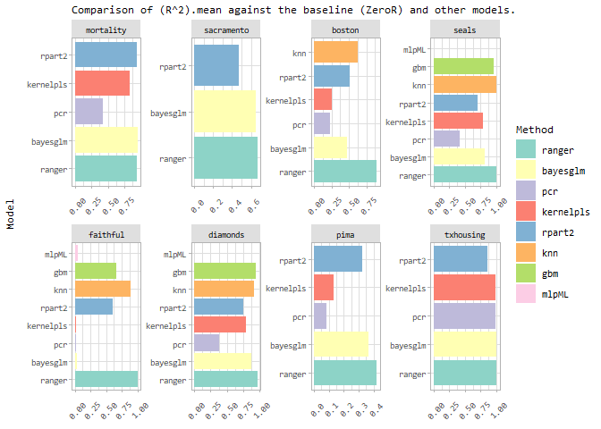
The above plots show only the mean of RMSE, R^2 and MAE. Let’s make a facetted boxplot for each of these metrics. For that, we need to transform and present the data in another shape.
# x-axis: dataset, y-axis: value, vertical-facet: model, horizontal-facet: metric
tempDs2 <- data.frame(matrix(nrow = 0, ncol = 4))
colnames(tempDs2) <- c("Dataset", "Value", "Model", "Metric")
temp <- do.call(rbind, lapply(caret_models_r, function(m) {
if (m == "bayesCaret") {
# Let's subdivide this with simple=T/F
tempS <- gridresults_r_bc[gridresults_r_bc$hyper.mode == "simple", tempDsCols_r]
tempS$Model <- "Simple"
tempF <- gridresults_r_bc[gridresults_r_bc$hyper.mode == "full", tempDsCols_r]
tempF$Model <- "Full"
return(rbind(tempS, tempF))
}
return(gridresults_r_others[, tempDsCols_r])
}))
for (ds in datasets_r) {
for (mod in c("Simple", "Full", caret_models_r)) {
for (met in c("RMSE", "Rsquared", "MAE")) {
data <- temp[temp$Model == mod, met]
dLen <- length(data)
if (dLen == 0) next
tempDs2 <- rbind(tempDs2, data.frame(
Dataset = rep(ds, dLen),
Value = data,
Model = rep(mod, dLen),
Metric = rep(met, dLen)
))
}
}
}
# x-axis: dataset, y-axis: value, vertical-facet: model, horizontal-facet: metric
temp <- ggplot(tempDs2, aes(x=Dataset, y=Value)) +
geom_boxplot() +
facet_grid(Metric ~ Model, scales = "free") +
theme_light(base_size = 9) +
theme(text = element_text(family="Consolas"))
#saveAndPlotAsEPS(temp, "Bayes-all-datasets-all-metrics", width = 1570, height = 1570)The previous plot is not terribly useful, unfortunately. Let’s show a facetted box-plot matrix per metric instead.
facettedBoxplot(gridresults_r_all, "Rsquared", "R^2 (cov^2)") %>% saveAndPlotAsEPS("Bayes-all-datasets_bp_RSQ", height = 3.2)
## Warning: Removed 56 rows containing non-finite values (stat_boxplot).
## Warning: Removed 56 rows containing non-finite values (stat_boxplot).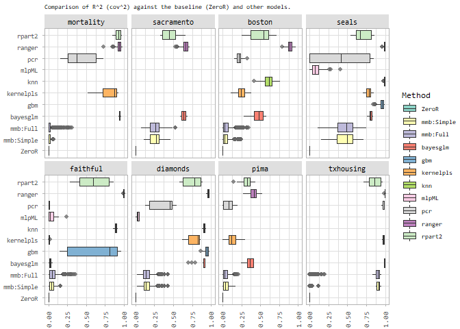
facettedBoxplot(gridresults_r_all, "RMSE", scales = "free_x", scale_y = scale_y_log10(
breaks = scales::trans_breaks("log10", function(x) 10^x),
labels = scales::trans_format("log10", scales::math_format(10^.x))
)) %>% saveAndPlotAsEPS("Bayes-all-datasets_bp_RMSE", height = 3.2)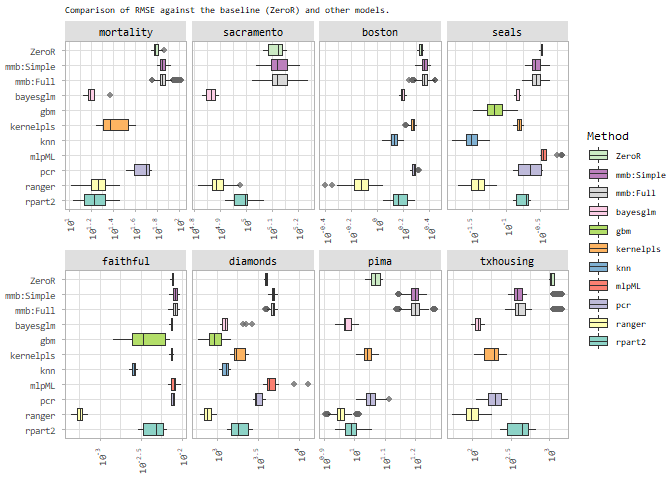
Evaluation of the effects of Hyperparameters
In this section, we will outline the effects of various hyperparameters in our Bayesian models. Since the type and amount of hyperparameters varies for classification and regression, we do them separately.
Classification
In classification, we distinguish the three modes simple, full and naive. We have 4 hyperparameters (list below). For assessing the effect, we relate each hyperparameter’s realization to Accuracy. Accuracy and Kappa have a correlation coefficient of 0.74.
-
shiftAmount: Either0or0.1, so we could treat it as if it were boolean, -
retainMinValues: Integer between0and 101 (2, 4, 6, 8, 10, 11, 12, 20, 21, 26, 39, 47, 58, 101), -
doEcdf: Boolean, -
online: Integer between0(off) and 2147483647. Note that the maximum value is chosen so that all possible data is used. The values in use are: 0, 480, 607, 922, 1118, 1386, 2401, 2402, 2147483647.
Per each of the three modes, we will print a facetted density plot.
trainCounts <- sapply(datasets_c, function(d) {
return(nrow(get_dataset(d, 1)$train))
})
validCounts <- sapply(datasets_c, function(d) {
return(nrow(get_dataset(d, 1)$valid))
})
gridresults_c_bc$train.size <- 0
for (n in names(trainCounts)) {
gridresults_c_bc[gridresults_c_bc$Dataset == n, ]$train.size <- trainCounts[[n]]
# Where online == MAX, replace with actual max for dataset:
theMax <- trainCounts[[n]] + validCounts[[n]]
temp <- gridresults_c_bc[gridresults_c_bc$Dataset == n, ]$hyper.online
temp <- sapply(temp, function(v) if (v == .Machine$integer.max) theMax else v)
gridresults_c_bc[gridresults_c_bc$Dataset == n, "hyper.onlineN"] <- temp
}
tempDs_c <- rbind(
data.frame(
Acc = gridresults_c_bc$Accuracy,
Val = gridresults_c_bc$hyper.shiftAmount + 1e-10, # avoid 0
Var = rep("shiftAmount", nrow(gridresults_c_bc)),
doEcdf = gridresults_c_bc$hyper.doEcdf,
Model = gridresults_c_bc$Model
),
data.frame(
Acc = gridresults_c_bc$Accuracy,
Val = (gridresults_c_bc$hyper.retainMinValues / gridresults_c_bc$train.size) + 1e-10,
Var = rep("retainMinValues", nrow(gridresults_c_bc)),
doEcdf = gridresults_c_bc$hyper.doEcdf,
Model = gridresults_c_bc$Model
),
data.frame(
Acc = gridresults_c_bc$Accuracy,
Val = ifelse(gridresults_c_bc$hyper.online == 0,
gridresults_c_bc$Accuracy * max(sqrt(gridresults_c_bc$hyper.onlineN)),
sqrt(gridresults_c_bc$hyper.onlineN) + 1e-10),
Var = rep("sqrt(online)", nrow(gridresults_c_bc)),
doEcdf = gridresults_c_bc$hyper.doEcdf,
Model = gridresults_c_bc$Model
)
)
facettedDensityPlot <- function(ds, metric, metricName = metric, form, subtitle, scale_y = scale_y_continuous(), labeller = label_both, grad_high = "#102723", grad_low = "#8DD3C7") {
ggplot(ds, aes(x=Val, y=ds[[metric]])) +
stat_density_2d(aes(fill = ..level..), geom="polygon", color = "white") +
facet_grid(form, scales = "free", labeller = labeller) +
theme_light() +
theme(plot.subtitle = element_text(size = 7, margin = margin(b=5)),
text = element_text(family="Consolas"),
axis.text.x = element_text(
angle = 90,
margin = margin(t=5),
hjust = 1,
vjust = .4
),
axis.title.x = element_blank(),
axis.title.y = element_text(margin = margin(r=10), size = 7),
strip.background = element_rect(fill="#dfdfdf"),
strip.text = element_text(color="black", size = 8),
legend.text = element_text(size = 7),
legend.title = element_text(
angle = 270,
margin = margin(b=5),
size = 8,
vjust = .15
)
) +
scale_y +
scale_fill_gradient(high = grad_high, low = grad_low) +
labs(
fill = "Relative\nLikelihood",
subtitle = subtitle
) +
ylab(metricName)
}
facettedDensityPlot(
ds = tempDs_c[tempDs_c$Model == "bc_s",],
metric = "Acc",
metricName = "Accuracy",
form = doEcdf ~ Var,
subtitle = "Effect of Hyperparameters in simple Bayesian classification."
) %>% saveAndPlotAsEPS("Bayes-hps-c-simple", height = 3.2)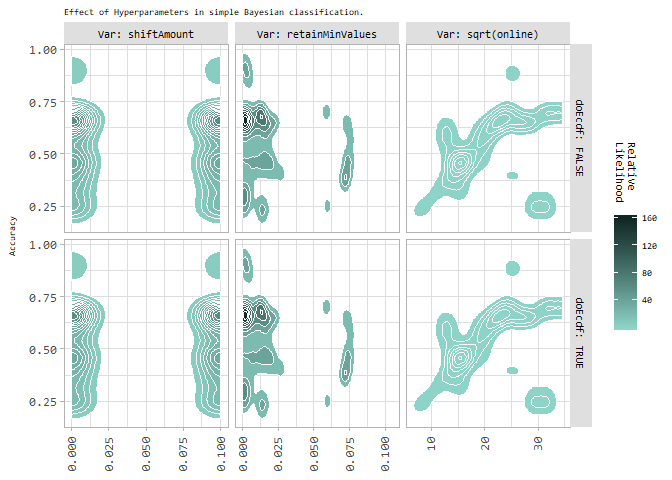
facettedDensityPlot(
ds = tempDs_c[tempDs_c$Model == "bc_n",],
metric = "Acc",
metricName = "Accuracy",
form = doEcdf ~ Var,
subtitle = "Effect of Hyperparameters in naive Bayesian classification."
) %>% saveAndPlotAsEPS("Bayes-hps-c-naive", height = 3.2)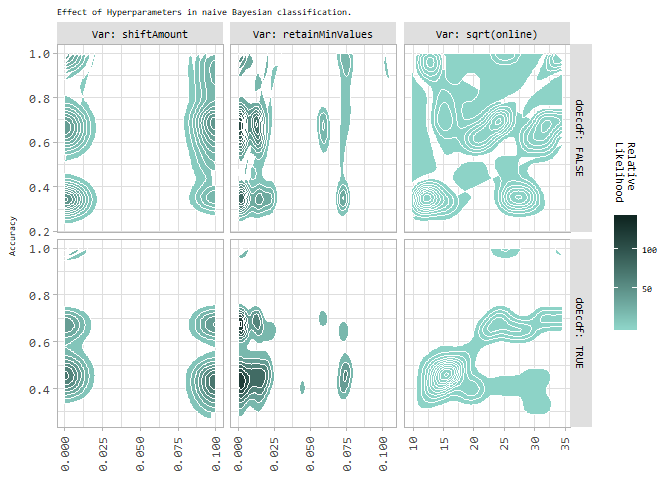
facettedDensityPlot(
ds = tempDs_c[tempDs_c$Model == "bc_f",],
metric = "Acc",
metricName = "Accuracy",
form = doEcdf ~ Var,
subtitle = "Effect of Hyperparameters in full Bayesian classification."
) %>% saveAndPlotAsEPS("Bayes-hps-c-full", height = 3.2)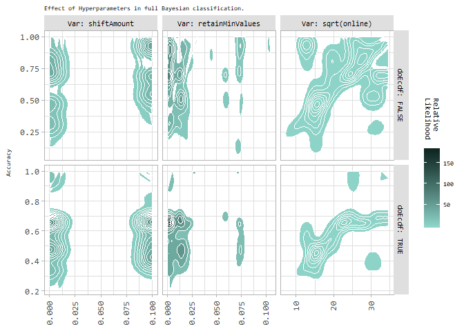
Regression
trainCounts_r <- sapply(datasets_r, function(d) {
return(nrow(get_dataset(d, 1)$train))
})
validCounts_r <- sapply(datasets_r, function(d) {
return(nrow(get_dataset(d, 1)$valid))
})
gridresults_r_bc$train.size <- 0
for (n in names(trainCounts_r)) {
gridresults_r_bc[gridresults_r_bc$Dataset == n, ]$train.size <- trainCounts_r[[n]]
# Where online == MAX, replace with actual max for dataset:
theMax <- trainCounts_r[[n]] + validCounts_r[[n]]
temp <- gridresults_r_bc[gridresults_r_bc$Dataset == n, ]$hyper.online
temp <- sapply(temp, function(v) if (v == .Machine$integer.max) theMax else v)
gridresults_r_bc[gridresults_r_bc$Dataset == n, "hyper.onlineN"] <- temp
}
gridresults_r_bc$hyper.numBucketsN <- gridresults_r_bc$hyper.numBuckets
gridresults_r_bc[is.na(gridresults_r_bc$hyper.numBuckets),]$hyper.numBucketsN <-
ceiling(log2(gridresults_r_bc[is.na(gridresults_r_bc$hyper.numBuckets),]$train.size))
gridresults_r_bc$Category <- ""
for (doEcdf in c(TRUE, FALSE)) {
for (sampleAll in c(TRUE, FALSE)) {
theCat <- paste("ecdf:", if (doEcdf) "T" else "F", ", s.A.:", if (sampleAll) "T" else "F", sep = "")
gridresults_r_bc[gridresults_r_bc$hyper.doEcdf == doEcdf & gridresults_r_bc$hyper.sampleFromAllBuckets == sampleAll, ]$Category <- theCat
}
}
tempDs_r <- rbind(
data.frame(
Rsq = gridresults_r_bc$Rsquared,
Val = gridresults_r_bc$hyper.shiftAmount + runif(nrow(gridresults_r_bc)) * 1e-10, # avoid 0
Var = rep("shiftAmount", nrow(gridresults_r_bc)),
Cat = gridresults_r_bc$Category,
Model = gridresults_r_bc$Model
),
data.frame(
Rsq = gridresults_r_bc$Rsquared,
Val = (gridresults_r_bc$hyper.retainMinValues / gridresults_r_bc$train.size) + 1e-10,
Var = rep("retainMinValues", nrow(gridresults_r_bc)),
Cat = gridresults_r_bc$Category,
Model = gridresults_r_bc$Model
),
data.frame(
Rsq = gridresults_r_bc$Rsquared,
Val = gridresults_r_bc$hyper.numBucketsN,
Var = rep("numBuckets", nrow(gridresults_r_bc)),
Cat = gridresults_r_bc$Category,
Model = gridresults_r_bc$Model
),
data.frame(
Rsq = gridresults_r_bc$Rsquared,
Val = ifelse(gridresults_r_bc$hyper.online == 0,
gridresults_r_bc$Rsquared * max(sqrt(gridresults_r_bc$hyper.onlineN)),
sqrt(gridresults_r_bc$hyper.onlineN) + 1e-10),
Var = rep("sqrt(online)", nrow(gridresults_r_bc)),
Cat = gridresults_r_bc$Category,
Model = gridresults_r_bc$Model
)
)
facettedDensityPlot(
ds = tempDs_r[tempDs_r$Model == "bc_s",],
metric = "Rsq",
metricName = "R^2 = cov^2",
form = Cat ~ Var,
subtitle ="Effect of Hyperparameters in simple Bayesian regression.",
grad_high = "#2C2749",
grad_low = "#BEBADA",
scale_y = scale_y_sqrt()
) %>% saveAndPlotAsEPS("Bayes-hps-r-simple")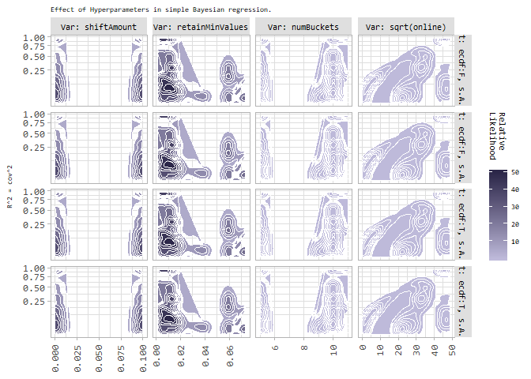
facettedDensityPlot(
ds = tempDs_r[tempDs_r$Model == "bc_f",],
metric = "Rsq",
metricName = "R^2 = cov^2",
form = Cat ~ Var,
subtitle ="Effect of Hyperparameters in full Bayesian regression.",
grad_high = "#2C2749",
grad_low = "#BEBADA",
scale_y = scale_y_sqrt()
) #%>% saveAndPlotAsEPS("Bayes-hps-r-full")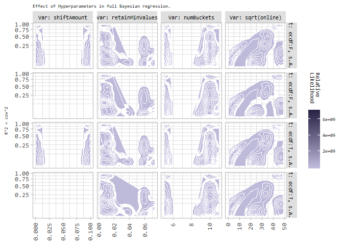
As can be seen in the above plot, we do not get great visual results for shiftAmount if sampleFromAllBuckets=TRUE, so let’s plot it again w/o this column:
facettedDensityPlot(
ds = tempDs_r[tempDs_r$Model == "bc_f" & tempDs_r$Var != "shiftAmount",],
metric = "Rsq",
metricName = "R^2 = cov^2",
form = Cat ~ Var,
subtitle ="Effect of Hyperparameters in full Bayesian regression.",
scale_y = scale_y_sqrt(),
grad_high = "#2C2749",
grad_low = "#BEBADA",
labeller = labeller(Cat = c(
"ecdf:F, s.A.:F" = "ecdf:F, sA:F",
"ecdf:F, s.A.:T" = "ecdf:F, sA:T",
"ecdf:T, s.A.:F" = "ecdf:T, sA:F",
"ecdf:T, s.A.:T" = "ecdf:T, sA:T"
))
) %>% saveAndPlotAsEPS("Bayes-hps-r-full", height = 4.6)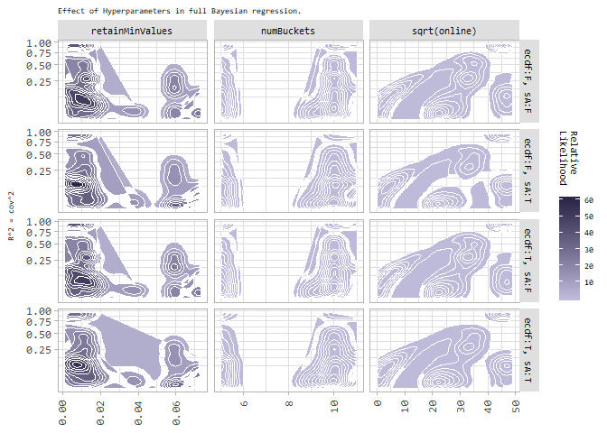